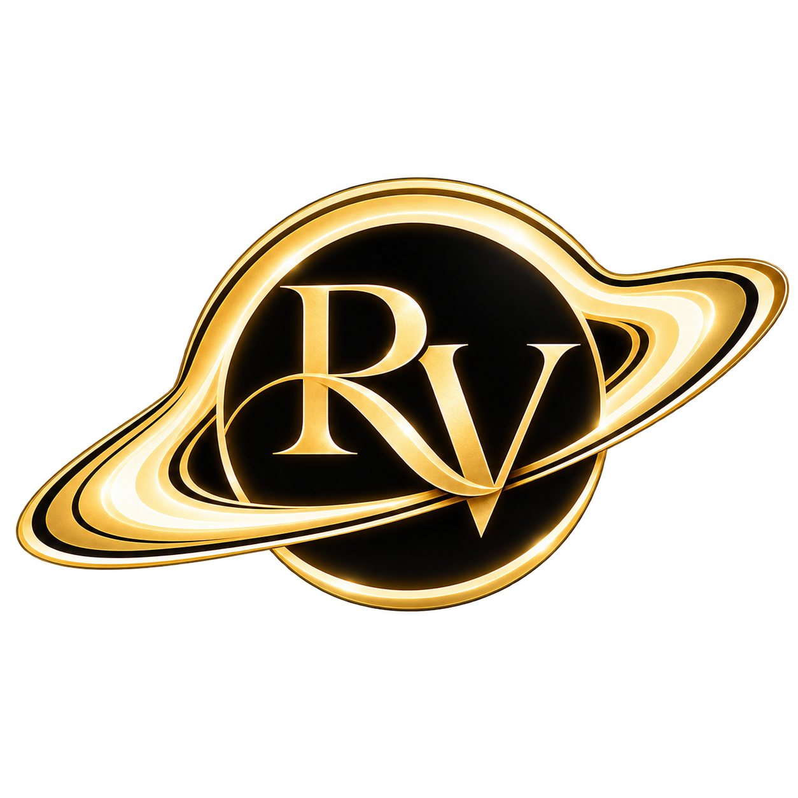
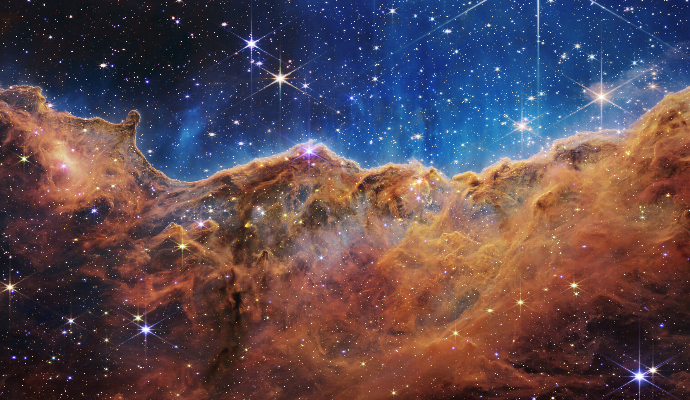
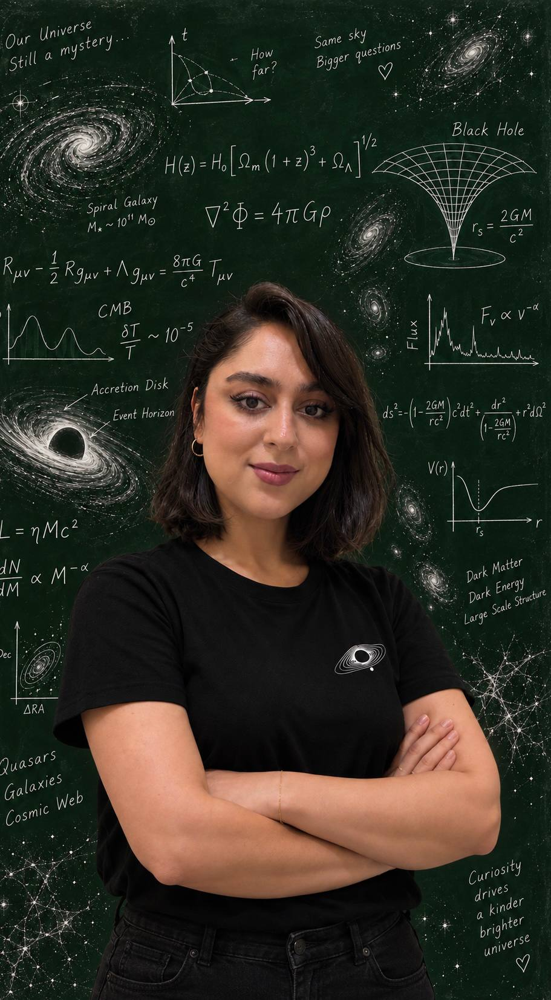

Black holes
& quasars
Investigating the masses and evolution of supermassive black holes, and the luminous quasars that reveal them across cosmic time.
AGN · LSTM · COSMIC EVOLUTION

ASTROPHYSICIST · EDUCATOR · SCIENCE COMMUNICATOR
Big questions. A universe of possibilities.
I study black holes and distant galaxies—and bring the wonder of science into everyday life.

01 / THE PERSON BEHIND THE QUESTIONS
Hello, I’m Reyhaneh. You can call me Rey.
I’m an astrophysics researcher with a master’s degree in Gravity and Cosmology from K. N. Toosi University of Technology. My work connects the physics of black holes and galaxies with the possibilities of machine learning.
I investigate how we can learn from distant quasars, what early galaxies tell us about our cosmological models, and how AI can help us find meaningful patterns in astronomical data.
That curiosity travels with me: into the classroom, onto the screen, and into the communities I’m part of. Science, books, and shared experiences all give us new ways to see the world.
02 / EXPLORING THE UNIVERSE
From the earliest galaxies to the black holes at their hearts, I use physical models and data to ask what the universe is telling us.
Investigating the masses and evolution of supermassive black holes, and the luminous quasars that reveal them across cosmic time.
AGN · LSTM · COSMIC EVOLUTIONTesting dark matter halo models against high-redshift JWST observations to better understand how massive galaxies formed so early.
JWST · DARK MATTER · COSMOLOGYDeveloping machine-learning approaches to identify bright quasars in Euclid deep-field data, including work with autoencoders.
EUCLID · PYTHON · MACHINE LEARNINGPHYSICAL REVIEW D · 112, 123503
Exploring how more realistic halo-collapse physics can reduce the apparent tension between early JWST galaxies and cosmological predictions.
THE ASTROPHYSICAL JOURNAL · 954, 164
Using deep learning to model the relationship between quasar black hole masses and redshift, and comparing the predictions with observations.
UNDER REVIEW · PHYSICAL REVIEW D
SUBMITTED TO PHYSICAL REVIEW D · JUNE 2026
Connecting stochastic modeling, analytical approaches, and machine learning to investigate black hole mass evolution.
EUCLID DEEP FIELD SOUTH
Developing an AI-assisted approach to bright-quasar identification in Euclid data.
Published articles link to their journal and preprint records. Submission, review, and preparation statuses follow my 2026 CV and subsequent updates.
03 / EXPERIENCE & ACHIEVEMENTS
Research, education, and a long-running habit of following an interesting problem wherever it leads.
Research assistant · Bright-quasar identification in Euclid deep fields using AI.
Research assistant · JWST high-redshift galaxies and data-driven quasar modeling.
Spherical domain wall collapse with Dr. Nima Khosravi.
Research assistant · Active galactic nuclei, supermassive black holes, and primordial black holes.
K. N. Toosi University of Technology. Undergraduate work on analogue black holes; master’s research on primordial black holes as dark matter.
Texas Tech University · Valid 2025–2030.
Mentored a six-student PYPT team to a silver medal; four students qualified for Iran’s national team.
Top-student recognition and an excellent thesis grade of 20/20.
PYPT bronze medal and qualification for Iran’s national team.
Tebyan National Student Research Festival: laser communication and “Hearing the Light.”
THE TOOLKIT
Persian · Native / English · C1, TOEFL 108 / German · C1
Also learning French, Italian, and Arabic. Workshop familiarity with CAMB and CosmoMC.
04 / TEACHING & MENTORSHIP
Physics becomes memorable when students get to think like physicists.
My teaching spans English-language school physics and mathematics, postgraduate teaching assistance, and research-based tournament mentoring.
Discuss teaching or a science eventA-Level, IGCSE, and O-Level physics and mathematics. Lecturer and head of department at Glocal College, and lecturer at Hakim International School.
Teaching assistant for master’s courses in General Relativity and Cosmology at K. N. Toosi University of Technology.
Mentorship for young physicists and service as a jury member for the Persian Young Physicists’ and Young Naturalists’ tournaments.
Former Academic Dean at Iranian Cambridge School, supporting curriculum and teacher development. Scientific translation and editing, including work on Frank Wilczek’s Fundamentals: Ten Keys to Reality.
Head Teacher and Educational Supervisor for German at Melal Language Academy, Tehran · August 2018–January 2021.
Part-time English and German teacher at language academies in Tehran · January 2015–January 2021. Institutions included Melal, Zaban Aval, Farsian, Pardisan, Iran Jahan, and Pep Talk.
I teach Physics, Mathematics, English and German online. An initial assessment and consultation helps us understand your current level, goals and learning needs, and discuss a suitable way forward.
Please include your name, age or education stage, chosen subject, current level, goals, any target exam or curriculum, city and time zone, and availability. All classes take place online.
Request an assessment & consultationSession timing and details are confirmed by email.
05 / SCIENCE, OUT LOUD
Black holes, big questions, and life as a researcher. I share the science—and the person doing it—through videos and conversations.
Explore my YouTube channelRESEARCH DIARY
A glimpse into the work behind the questions.
ASTRONOMY & ARTIFICIAL INTELLIGENCE
A question at the intersection of my research interests.
06 / MY OTHER WORLDS
Some of my favorite explorations happen through stories, shared experiences, and the people they bring together.
FilYc brings film and physics into the same conversation. We watch movies together, then explore the real science behind their worlds—from the ideas that hold up to the imaginative leaps that make us ask “what if?”
Explore FilYc@the_filycTextual Relations is a space for books, cultural experiences, and meaningful connection. Come for a story; stay for the conversations—and the people—it brings into your life.
Explore TR Book Club@tr.bookclubPRIVATE ACADEMIC MANAGEMENT
An education built around the student.
My business brings the full academic journey under one coordinated plan—from the classroom to university applications and beyond.
ONE STUDENT. ONE CONTINUOUS PLAN.
Vellum House is a private academic management office for students and families who want continuity across teaching, curriculum choices, personal development, and admissions.
Specialist instruction, a tailored roadmap, and regular evaluation work together. Families receive a clear monthly picture of progress, while each next step is planned around the student’s goals, strengths, and ambitions.
01 / ACADEMIC DIRECTION
Assessment and long-term planning across IGCSE, A Level, IB, SAT, and AP, with private instruction aligned to the student’s roadmap.
02 / PROFILE & ADMISSIONS
Research, competitions, and leadership experiences, followed by university selection, applications, essays, and interview preparation.
03 / CONTINUITY & SUPPORT
Monthly evaluation and family reporting, plus support for university coursework strategy, research direction, and graduate applications.
BY CONSULTATION ONLY
Every plan begins with the student. A private consultation is the first step in understanding your goals and deciding whether Vellum House is the right fit.
Please share the student’s name, age, education stage, current curriculum, academic standing, goals, key deadlines and the support needed. Include your city, time zone and availability, and introduce yourself if enquiring on the student’s behalf.
07 / START A CONVERSATION
Research collaborations, teaching, science communication,
or an idea that deserves a conversation.